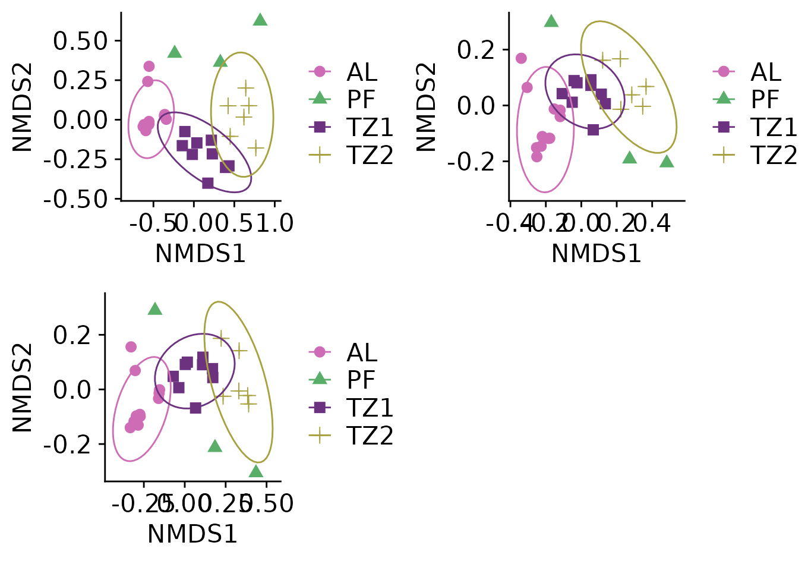

Phyloseq analysis template
AU-ENVS Bioinformatics
phyloseq_analysis.Rmd
library(RauENVS)
library(tidyverse)
library(phyloseq)
library(microbiome)
library(cowplot)
library(vegan)
library(magrittr)
set_theme_AU_ENVS()
data("phyloseq_template_toy_data")This is a RMarkdown template for doing a quick analysis of an OTU and taxonomic table using RMarkdown.
It contains toy data to illustrate what this notebook does. First, make sure you run the entire notebook with the toy example. To do this, click on “Knit” in Rstudio.
Read your data
You need 3 tabulated files with contains metadata, OTU and taxonomy, respectively. Please make sure you read the data correctly. Delete the code that generates the toy example and uncomment the code that reads files.
Read metadata table
You metadata table must contain a column named rowname and as many features as desired. Either edit the tabulated file or rename the column with the sample identifier. Your metadata table should look something like the example below.
By assigning a variable inside () we print a summary.
# (metadata_tbl <- readr::read_csv("metadata_dummy.csv"))
metadata_tbl <- phyloseq_template_toy_data$meta
knitr::kable(metadata_tbl)| rowname | layer | age | pH | depth |
|---|---|---|---|---|
| TK20-2 | AL | AY | 4.02 | 20 |
| TK20-3 | AL | AY | 4.29 | 30 |
| TK20-4 | AL | AY | 4.25 | 40 |
| TK20-5 | TZ1 | AM | 4.64 | 50 |
| TK20-6 | TZ1 | AM | 4.13 | 60 |
| TK20-7 | TZ1 | AO | 4.86 | 70 |
| TK20-8 | TZ2 | AO | 4.48 | 80 |
| TK20-9 | TZ2 | AO | 4.57 | 90 |
| TK20-10 | PF | AO | 4.91 | 100 |
| TK20-11 | AL | AY | 4.22 | 10 |
| TK20-12 | AL | AY | 4.02 | 20 |
| TK20-13 | AL | AY | 4.29 | 30 |
| TK20-14 | AL | AY | 4.25 | 40 |
| TK20-15 | TZ1 | AM | 4.64 | 50 |
| TK20-16 | TZ1 | AM | 4.13 | 60 |
| TK20-17 | TZ1 | AO | 4.86 | 70 |
| TK20-18 | TZ2 | AO | 4.48 | 80 |
| TK20-19 | TZ2 | AO | 4.57 | 90 |
| TK20-20 | PF | AO | 4.91 | 100 |
| TK20-21 | AL | AY | 4.22 | 10 |
| TK20-22 | AL | AY | 4.02 | 20 |
| TK20-23 | AL | AY | 4.29 | 30 |
| TK20-24 | AL | AY | 4.25 | 40 |
| TK20-25 | TZ1 | AM | 4.64 | 50 |
| TK20-26 | TZ1 | AM | 4.13 | 60 |
| TK20-27 | TZ1 | AO | 4.86 | 70 |
| TK20-28 | TZ2 | AO | 4.48 | 80 |
| TK20-29 | TZ2 | AO | 4.57 | 90 |
| TK20-30 | PF | AO | 4.91 | 100 |
Read OTU table
Please, make sure you take into account if the table is tabulated using “,”, “;” or tabs. Your otu table should look something like the example below.
# otu_tbl <- readr::read_csv("otu_dummy.csv")
otu_tbl <- phyloseq_template_toy_data$otu
otu_tbl |> head() |> knitr::kable()| TK20-2 | TK20-3 | TK20-4 | TK20-5 | TK20-6 | TK20-7 | TK20-8 | TK20-9 | TK20-10 | TK20-11 | TK20-12 | TK20-13 | TK20-14 | TK20-15 | TK20-16 | TK20-17 | TK20-18 | TK20-19 | TK20-20 | TK20-21 | TK20-22 | TK20-23 | TK20-24 | TK20-25 | TK20-26 | TK20-27 | TK20-28 | TK20-29 | TK20-30 |
|---|---|---|---|---|---|---|---|---|---|---|---|---|---|---|---|---|---|---|---|---|---|---|---|---|---|---|---|---|
| 344 | 338 | 872 | 944 | 187 | 83 | 17 | 47 | 6 | 412 | 774 | 355 | 4769 | 992 | 2959 | 18 | 1 | 30 | 0 | 139 | 646 | 363 | 962 | 956 | 884 | 246 | 0 | 23 | 70 |
| 5776 | 14725 | 4922 | 3000 | 3304 | 646 | 298 | 448 | 401 | 10733 | 5590 | 9648 | 80899 | 8926 | 783 | 234 | 65 | 190 | 71 | 13144 | 6740 | 9200 | 4332 | 4624 | 911 | 186 | 4 | 149 | 412 |
| 4 | 5 | 3 | 2 | 9 | 295 | 4380 | 10308 | 7 | 16 | 13 | 4 | 29 | 0 | 23 | 167 | 1190 | 5087 | 3 | 3 | 15 | 11 | 10 | 9 | 1 | 5 | 5 | 8557 | 16 |
| 83 | 73 | 56 | 11 | 18 | 64 | 125 | 306 | 1 | 84 | 181 | 61 | 387 | 4 | 83 | 42 | 23 | 156 | 0 | 36 | 117 | 52 | 113 | 25 | 16 | 63 | 2 | 43 | 9 |
| 1798 | 886 | 2251 | 3176 | 437 | 1598 | 2589 | 7291 | 4790 | 261 | 3532 | 785 | 14943 | 1829 | 8676 | 1151 | 2294 | 3138 | 8 | 174 | 2186 | 555 | 2508 | 2096 | 3313 | 2074 | 65 | 2503 | 2538 |
| 292 | 595 | 540 | 29 | 89 | 75 | 12 | 63 | 11 | 234 | 388 | 362 | 2452 | 18 | 254 | 28 | 143 | 31 | 0 | 231 | 318 | 414 | 708 | 74 | 25 | 38 | 14 | 67 | 27 |
Read OTU table
Please, make sure you take into account if the table is tabulated using “,”, “;” or tabs. Your taxonomic table should look something like the example below.
# taxonomic_tbl <- readr::read_csv("taxonomic_dummy.csv")
taxonomic_tbl <- phyloseq_template_toy_data$taxa
taxonomic_tbl |> head() |> knitr::kable()| Kingdom | Phylum | Class | Order | Family | Genus | Species |
|---|---|---|---|---|---|---|
| k__Bacteria | p__Proteobacteria | c__Deltaproteobacteria | o__Oligoflexales | f__0319-6G20 | g__ | s__ |
| k__Bacteria | p__Actinobacteria | c__Actinobacteria (class) | o__Kineosporiales | f__Kineosporiaceae | g__Kineosporia | s__Unknown Kineosporia species 1 |
| k__Bacteria | p__Actinobacteria | c__Acidimicrobiia | o__Acidimicrobiales | f__OM1 clade | g__ | s__ |
| k__Bacteria | p__Ca. Parcubacteria | c__ | o__ | f__ | g__ | s__ |
| k__Bacteria | p__Proteobacteria | c__Betaproteobacteria | o__Nitrosomonadales | f__Nitrosomonadaceae | g__ | s__ |
| k__Bacteria | p__Acidobacteria | c__Solibacteres (Acidobacteria group 3) | o__Solibacterales | f__Solibacteraceae | g__Ca. Solibacter | s__ |
Preprocess your data
Transform into phyloseq object
otu <- otu_tbl |>
phyloseq::otu_table(taxa_are_rows = TRUE)
taxa <- taxonomic_tbl |>
as.matrix() |>
phyloseq::tax_table()
meta <- metadata_tbl|>
tibble::column_to_rownames(var = "rowname")|>
phyloseq::sample_data()Now, we combine OTU table, taxonomy table and metadata into a
phyloseq object.
(physeq <- phyloseq(otu, taxa, meta))
#> phyloseq-class experiment-level object
#> otu_table() OTU Table: [ 3728 taxa and 29 samples ]
#> sample_data() Sample Data: [ 29 samples by 4 sample variables ]
#> tax_table() Taxonomy Table: [ 3728 taxa by 7 taxonomic ranks ]Dealing with taxonomic categories
We will remove the SILVA prefix, anything labelled “unknown” (this will not affect abundances) and replace spaces with underscores.
Data cleaning
You may want to do some custom data cleaning here using the function
subset_taxa. As an example, we can remove all taxa which
belong to the SAR Kingdom groups. Notice how the number of taxa have
been reduced.
physeq <- physeq |>
subset_taxa(Kingdom != "SAR")
physeq
#> phyloseq-class experiment-level object
#> otu_table() OTU Table: [ 3615 taxa and 29 samples ]
#> sample_data() Sample Data: [ 29 samples by 4 sample variables ]
#> tax_table() Taxonomy Table: [ 3615 taxa by 7 taxonomic ranks ]Making unique OTU labels
The function make_physeq_tax_label_unique would only
work if “empty” taxonomic ranks are encoded as ““. Please, make sure of
it before running the function. Otherwise, you will get ugly unique OTU
labels (in purpose).
stopifnot(
all(!grepl(" ", tax_table(physeq), fixed=TRUE))
)
stopifnot(
all(!is.na(tax_table(physeq)))
)First, we create the new labels:
new_otu_labels <- tax_table(physeq) |>
make_physeq_tax_label_unique()
head(new_otu_labels)
#> [1] "0319-6G20" "Kineosporia" "OM1clade"
#> [4] "Ca.Parcubacteria" "Nitrosomonadaceae" "Ca.Solibacter"And, if everything looks fine, we assign the new labels.
taxa_names(physeq) <- new_otu_labelsTransform sample counts
How you transform your counts, or do so, will depend on the experiment and factors such as the number of replicates.
physeq_rel <- physeq |>
transform_sample_counts(function(x) x/sum(x)*100)
physeq_mean_rel <- physeq_rel |>
merge_samples("depth") |>
transform_sample_counts(function(x) x/sum(x)*100)
sample_sums(physeq_mean_rel)
#> 10 20 30 40 50 60 70 80 90 100
#> 100 100 100 100 100 100 100 100 100 100Inspect data
Now, we can inspect the resulting tables:
physeq_rel |>
otu_table()|>
as.data.frame() |>
head() |>
knitr::kable()| TK20-2 | TK20-3 | TK20-4 | TK20-5 | TK20-6 | TK20-7 | TK20-8 | TK20-9 | TK20-10 | TK20-11 | TK20-12 | TK20-13 | TK20-14 | TK20-15 | TK20-16 | TK20-17 | TK20-18 | TK20-19 | TK20-20 | TK20-21 | TK20-22 | TK20-23 | TK20-24 | TK20-25 | TK20-26 | TK20-27 | TK20-28 | TK20-29 | TK20-30 | |
|---|---|---|---|---|---|---|---|---|---|---|---|---|---|---|---|---|---|---|---|---|---|---|---|---|---|---|---|---|---|
| 0319-6G20 | 0.006 | 0.007 | 0.023 | 0.029 | 0.007 | 0.001 | 0.001 | 0.001 | 0.000 | 0.013 | 0.007 | 0.010 | 0.022 | 0.044 | 0.013 | 0.000 | 0.000 | 0.001 | 0.000 | 0.006 | 0.008 | 0.012 | 0.024 | 0.022 | 0.022 | 0.005 | 0.000 | 0.001 | 0.003 |
| Kineosporia | 0.101 | 0.320 | 0.129 | 0.094 | 0.116 | 0.007 | 0.012 | 0.008 | 0.015 | 0.336 | 0.053 | 0.272 | 0.370 | 0.397 | 0.003 | 0.004 | 0.002 | 0.007 | 0.299 | 0.610 | 0.088 | 0.298 | 0.106 | 0.105 | 0.023 | 0.004 | 0.004 | 0.004 | 0.019 |
| OM1clade | 0.000 | 0.000 | 0.000 | 0.000 | 0.000 | 0.003 | 0.181 | 0.192 | 0.000 | 0.001 | 0.000 | 0.000 | 0.000 | 0.000 | 0.000 | 0.003 | 0.038 | 0.189 | 0.013 | 0.000 | 0.000 | 0.000 | 0.000 | 0.000 | 0.000 | 0.000 | 0.005 | 0.235 | 0.001 |
| Ca.Parcubacteria | 0.001 | 0.002 | 0.001 | 0.000 | 0.001 | 0.001 | 0.005 | 0.006 | 0.000 | 0.003 | 0.002 | 0.002 | 0.002 | 0.000 | 0.000 | 0.001 | 0.001 | 0.006 | 0.000 | 0.002 | 0.002 | 0.002 | 0.003 | 0.001 | 0.000 | 0.001 | 0.002 | 0.001 | 0.000 |
| Nitrosomonadaceae | 0.031 | 0.019 | 0.059 | 0.099 | 0.015 | 0.018 | 0.107 | 0.136 | 0.175 | 0.008 | 0.033 | 0.022 | 0.068 | 0.081 | 0.038 | 0.019 | 0.074 | 0.117 | 0.034 | 0.008 | 0.029 | 0.018 | 0.062 | 0.048 | 0.084 | 0.041 | 0.065 | 0.069 | 0.117 |
| Ca.Solibacter | 0.005 | 0.013 | 0.014 | 0.001 | 0.003 | 0.001 | 0.000 | 0.001 | 0.000 | 0.007 | 0.004 | 0.010 | 0.011 | 0.001 | 0.001 | 0.000 | 0.005 | 0.001 | 0.000 | 0.011 | 0.004 | 0.013 | 0.017 | 0.002 | 0.001 | 0.001 | 0.014 | 0.002 | 0.001 |
physeq_rel |>
tax_table()|>
as.data.frame() |>
head() |>
knitr::kable()| Kingdom | Phylum | Class | Order | Family | Genus | Species | |
|---|---|---|---|---|---|---|---|
| 0319-6G20 | Bacteria | Proteobacteria | Deltaproteobacteria | Oligoflexales | 0319-6G20 | ||
| Kineosporia | Bacteria | Actinobacteria | Actinobacteria(class) | Kineosporiales | Kineosporiaceae | Kineosporia | |
| OM1clade | Bacteria | Actinobacteria | Acidimicrobiia | Acidimicrobiales | OM1clade | ||
| Ca.Parcubacteria | Bacteria | Ca.Parcubacteria | |||||
| Nitrosomonadaceae | Bacteria | Proteobacteria | Betaproteobacteria | Nitrosomonadales | Nitrosomonadaceae | ||
| Ca.Solibacter | Bacteria | Acidobacteria | Solibacteres(Acidobacteriagroup3) | Solibacterales | Solibacteraceae | Ca.Solibacter |
Check if everything looks good:
#|label: sample_sums
sample_sums(physeq)
#> TK20-2 TK20-3 TK20-4 TK20-5 TK20-6 TK20-7 TK20-8 TK20-9
#> 5718973 4601365 3817254 3203439 2853679 8864332 2423598 5369228
#> TK20-10 TK20-11 TK20-12 TK20-13 TK20-14 TK20-15 TK20-16 TK20-17
#> 2741181 3192877 10543326 3553206 21866346 2246072 22745242 5973567
#> TK20-18 TK20-19 TK20-20 TK20-21 TK20-22 TK20-23 TK20-24 TK20-25
#> 3103575 2691406 23752 2153359 7644775 3084344 4072591 4390303
#> TK20-26 TK20-27 TK20-28 TK20-29 TK20-30
#> 3966687 5019554 99428 3638618 2162107
sample_names(physeq)
#> [1] "TK20-2" "TK20-3" "TK20-4" "TK20-5" "TK20-6" "TK20-7" "TK20-8"
#> [8] "TK20-9" "TK20-10" "TK20-11" "TK20-12" "TK20-13" "TK20-14" "TK20-15"
#> [15] "TK20-16" "TK20-17" "TK20-18" "TK20-19" "TK20-20" "TK20-21" "TK20-22"
#> [22] "TK20-23" "TK20-24" "TK20-25" "TK20-26" "TK20-27" "TK20-28" "TK20-29"
#> [29] "TK20-30"
rank_names(physeq)
#> [1] "Kingdom" "Phylum" "Class" "Order" "Family" "Genus" "Species"
sample_variables(physeq)
#> [1] "layer" "age" "pH" "depth"Data analysis
Perform an ordination using Nonmetric Multidimensional Scaling
Now, we ordinate using the NMDS method and bray distance. NMDS performs a Non-metric MultiDimenstional Scaling of a sample-wise ecological distance matrix onto a user-specified number of axes, k (in this case 2).
(physeq_nmds <- ordinate(physeq_rel, method = "NMDS", distance = "bray"))
#> Wisconsin double standardization
#> Run 0 stress 0.0634
#> Run 1 stress 0.0874
#> Run 2 stress 0.0634
#> ... Procrustes: rmse 7.49e-06 max resid 2.03e-05
#> ... Similar to previous best
#> Run 3 stress 0.0634
#> ... Procrustes: rmse 9.79e-06 max resid 2.82e-05
#> ... Similar to previous best
#> Run 4 stress 0.0848
#> Run 5 stress 0.0959
#> Run 6 stress 0.0862
#> Run 7 stress 0.0908
#> Run 8 stress 0.0634
#> ... New best solution
#> ... Procrustes: rmse 6.77e-06 max resid 1.83e-05
#> ... Similar to previous best
#> Run 9 stress 0.0634
#> ... Procrustes: rmse 2.85e-05 max resid 7.63e-05
#> ... Similar to previous best
#> Run 10 stress 0.0634
#> ... Procrustes: rmse 1.83e-05 max resid 4.93e-05
#> ... Similar to previous best
#> Run 11 stress 0.0959
#> Run 12 stress 0.0634
#> ... Procrustes: rmse 8.79e-06 max resid 2.35e-05
#> ... Similar to previous best
#> Run 13 stress 0.0634
#> ... Procrustes: rmse 1.07e-05 max resid 3.24e-05
#> ... Similar to previous best
#> Run 14 stress 0.0841
#> Run 15 stress 0.0634
#> ... Procrustes: rmse 9.22e-06 max resid 2.3e-05
#> ... Similar to previous best
#> Run 16 stress 0.0634
#> ... Procrustes: rmse 2.32e-05 max resid 6.55e-05
#> ... Similar to previous best
#> Run 17 stress 0.0634
#> ... New best solution
#> ... Procrustes: rmse 8.81e-06 max resid 2.46e-05
#> ... Similar to previous best
#> Run 18 stress 0.0959
#> Run 19 stress 0.0634
#> ... Procrustes: rmse 3.94e-06 max resid 1.11e-05
#> ... Similar to previous best
#> Run 20 stress 0.0908
#> *** Best solution repeated 2 times
#>
#> Call:
#> metaMDS(comm = veganifyOTU(physeq), distance = distance)
#>
#> global Multidimensional Scaling using monoMDS
#>
#> Data: wisconsin(veganifyOTU(physeq))
#> Distance: bray
#>
#> Dimensions: 2
#> Stress: 0.0634
#> Stress type 1, weak ties
#> Best solution was repeated 2 times in 20 tries
#> The best solution was from try 17 (random start)
#> Scaling: centring, PC rotation, halfchange scaling
#> Species: expanded scores based on 'wisconsin(veganifyOTU(physeq))'Goodness of Fit and Shepard Plot for Nonmetric Multidimensional Scaling
Now, we find the goodness of fit measure for the points in the previous nonmetric multidimensional scaling. The Shepard diagram is shown in the following figure:
vegan::stressplot(physeq_nmds)A plot of ordination distances and monotone or linear fit line against original dissimilarities.
Now, we’ll create a function for a) ordinate and b) plot. This way we’ll be able to plot for different subsets of taxa at the same time.
plot_nmds <- function(x, ...){
y <-ordinate(x, method = "NMDS", distance = "bray")
plot_ordination(x, y, ...)+
geom_point(size=3)+
theme(
legend.title = element_blank(),
legend.position = "right"
)+
stat_ellipse()
}
nmds <- list(
all = plot_nmds(
physeq_rel,type ="samples", color = "layer",shape = "layer"
),
phyla = physeq_rel |>
tax_glom(taxrank = "Phylum", NArm = FALSE) |>
plot_nmds(
type ="samples", color = "layer", shape = "layer"
),
class = physeq_rel |>
tax_glom(taxrank = "Class", NArm = FALSE) |>
plot_nmds(
type ="samples", color = "layer", shape = "layer"
)
)
#> Wisconsin double standardization
#> Run 0 stress 0.0634
#> Run 1 stress 0.0634
#> ... Procrustes: rmse 4.92e-06 max resid 9.9e-06
#> ... Similar to previous best
#> Run 2 stress 0.0634
#> ... New best solution
#> ... Procrustes: rmse 3.07e-06 max resid 6.75e-06
#> ... Similar to previous best
#> Run 3 stress 0.0634
#> ... Procrustes: rmse 3.2e-05 max resid 8.94e-05
#> ... Similar to previous best
#> Run 4 stress 0.0634
#> ... New best solution
#> ... Procrustes: rmse 8.12e-06 max resid 2.18e-05
#> ... Similar to previous best
#> Run 5 stress 0.0918
#> Run 6 stress 0.0848
#> Run 7 stress 0.0862
#> Run 8 stress 0.0821
#> Run 9 stress 0.0874
#> Run 10 stress 0.0634
#> ... New best solution
#> ... Procrustes: rmse 1.05e-05 max resid 2.52e-05
#> ... Similar to previous best
#> Run 11 stress 0.0634
#> ... Procrustes: rmse 3.41e-05 max resid 9.33e-05
#> ... Similar to previous best
#> Run 12 stress 0.0634
#> ... New best solution
#> ... Procrustes: rmse 6.59e-06 max resid 1.81e-05
#> ... Similar to previous best
#> Run 13 stress 0.0634
#> ... Procrustes: rmse 5.27e-05 max resid 0.00013
#> ... Similar to previous best
#> Run 14 stress 0.0898
#> Run 15 stress 0.0848
#> Run 16 stress 0.0634
#> ... Procrustes: rmse 2.19e-05 max resid 5.9e-05
#> ... Similar to previous best
#> Run 17 stress 0.0848
#> Run 18 stress 0.0634
#> ... Procrustes: rmse 2.43e-05 max resid 6.65e-05
#> ... Similar to previous best
#> Run 19 stress 0.0634
#> ... Procrustes: rmse 6.53e-05 max resid 0.000161
#> ... Similar to previous best
#> Run 20 stress 0.0908
#> *** Best solution repeated 5 times
#> Square root transformation
#> Wisconsin double standardization
#> Run 0 stress 0.0653
#> Run 1 stress 0.0653
#> ... Procrustes: rmse 6.68e-06 max resid 2.44e-05
#> ... Similar to previous best
#> Run 2 stress 0.122
#> Run 3 stress 0.0653
#> ... Procrustes: rmse 1.01e-05 max resid 4.19e-05
#> ... Similar to previous best
#> Run 4 stress 0.0653
#> ... Procrustes: rmse 4.17e-06 max resid 1.63e-05
#> ... Similar to previous best
#> Run 5 stress 0.122
#> Run 6 stress 0.107
#> Run 7 stress 0.0874
#> Run 8 stress 0.0874
#> Run 9 stress 0.107
#> Run 10 stress 0.106
#> Run 11 stress 0.0653
#> ... New best solution
#> ... Procrustes: rmse 1.73e-06 max resid 6.71e-06
#> ... Similar to previous best
#> Run 12 stress 0.112
#> Run 13 stress 0.0653
#> ... Procrustes: rmse 3.06e-05 max resid 0.000135
#> ... Similar to previous best
#> Run 14 stress 0.106
#> Run 15 stress 0.0653
#> ... New best solution
#> ... Procrustes: rmse 2.66e-06 max resid 1.1e-05
#> ... Similar to previous best
#> Run 16 stress 0.0874
#> Run 17 stress 0.0653
#> ... Procrustes: rmse 5.43e-06 max resid 2.27e-05
#> ... Similar to previous best
#> Run 18 stress 0.0653
#> ... Procrustes: rmse 1.8e-06 max resid 5.24e-06
#> ... Similar to previous best
#> Run 19 stress 0.0874
#> Run 20 stress 0.0653
#> ... Procrustes: rmse 5.93e-06 max resid 2.59e-05
#> ... Similar to previous best
#> *** Best solution repeated 4 times
#> Square root transformation
#> Wisconsin double standardization
#> Run 0 stress 0.0983
#> Run 1 stress 0.1
#> Run 2 stress 0.087
#> ... New best solution
#> ... Procrustes: rmse 0.0748 max resid 0.243
#> Run 3 stress 0.105
#> Run 4 stress 0.384
#> Run 5 stress 0.0865
#> ... New best solution
#> ... Procrustes: rmse 0.0246 max resid 0.118
#> Run 6 stress 0.0887
#> Run 7 stress 0.0717
#> ... New best solution
#> ... Procrustes: rmse 0.102 max resid 0.359
#> Run 8 stress 0.103
#> Run 9 stress 0.0717
#> ... Procrustes: rmse 3.88e-05 max resid 0.00013
#> ... Similar to previous best
#> Run 10 stress 0.0865
#> Run 11 stress 0.104
#> Run 12 stress 0.0717
#> ... Procrustes: rmse 4.27e-05 max resid 0.00015
#> ... Similar to previous best
#> Run 13 stress 0.1
#> Run 14 stress 0.0717
#> ... Procrustes: rmse 0.00526 max resid 0.0225
#> Run 15 stress 0.105
#> Run 16 stress 0.085
#> Run 17 stress 0.0717
#> ... New best solution
#> ... Procrustes: rmse 1.75e-05 max resid 6.09e-05
#> ... Similar to previous best
#> Run 18 stress 0.101
#> Run 19 stress 0.0865
#> Run 20 stress 0.0717
#> ... New best solution
#> ... Procrustes: rmse 1.86e-05 max resid 6.83e-05
#> ... Similar to previous best
#> *** Best solution repeated 1 timesYou can plot each plot individually:
nmds$allOr use plot_grid for a list of plots:
plot_grid(plotlist = nmds)
Richness plot
###----Richness all----
richness_plot <- plot_richness(
physeq, x="layer", color = "depth",
measures=c("Observed","Shannon","Simpson","InvSimpson")
)
richness_plot <- richness_plot + geom_boxplot(
data = richness_plot$data, aes(color = NULL), alpha = 0.05)+
theme(
legend.title = element_blank(),
legend.position = "right"
)
richness_plotStacked bar plots
physeq_mean_rel_phylum <- physeq_mean_rel |>
tax_glom(taxrank = "Phylum") |>
transform_sample_counts(function(x) x/sum(x)*100) Since we get too many phyla to plot in a stacked barplot, we will filter the low abundant ones and put them into one category. To do this, we will use the tidyverse again. First, we will create a normal data frame out of the phyloseq object and then add another column where all taxa with abundance lower than 3% will be renamed to “< 3%”.
physeq_mean_rel_phylumDF <- physeq_mean_rel_phylum |>
#transform phyloseq object to a data frame (DF)
psmelt()|>
#make the phyla characters, not factors
mutate(Phylum = as.character(Phylum))|>
#there are some reads that were assigned only to the kingdom level,
# i.e. NA on the phylum level, so we will rename them
mutate(
Phylum = replace(Phylum, Phylum == "NA", "unassigned"),
Phylum2 = replace(Phylum, Abundance < 3, "< 3%")
)|>
#reorder the phyla so that they are stacked according to abundance
mutate(
Phylum2 = reorder(Phylum2, Abundance)
)Now, we plot the stacked plot. You can change colors editing function get_wants_hue. Default is optimized for colorblindness.
n_phyla <- length(levels(physeq_mean_rel_phylumDF$Phylum2))
stacked_plot <- physeq_mean_rel_phylumDF |>
ggplot(aes(depth, Abundance, fill=Phylum2)) +
geom_bar(stat = "identity") +
labs(x= "depth [cm]",y= "Relative abundance [%]",
fill= "Phyla")+
scale_fill_manual(values = get_wants_hue(n_phyla))+
theme(legend.position="bottom") +
scale_x_continuous(breaks = seq(10, 100, 10))
stacked_plot You can obtain figures with more than one plot using plot_grid. For example:
ANOVA
First, create objects for microbiome package:
otu_microbiome <- microbiome::abundances(physeq)
meta_microbiome <- microbiome::meta(physeq)
otu_microbiome |> head() |> knitr::kable()| TK20-2 | TK20-3 | TK20-4 | TK20-5 | TK20-6 | TK20-7 | TK20-8 | TK20-9 | TK20-10 | TK20-11 | TK20-12 | TK20-13 | TK20-14 | TK20-15 | TK20-16 | TK20-17 | TK20-18 | TK20-19 | TK20-20 | TK20-21 | TK20-22 | TK20-23 | TK20-24 | TK20-25 | TK20-26 | TK20-27 | TK20-28 | TK20-29 | TK20-30 | |
|---|---|---|---|---|---|---|---|---|---|---|---|---|---|---|---|---|---|---|---|---|---|---|---|---|---|---|---|---|---|
| 0319-6G20 | 344 | 338 | 872 | 944 | 187 | 83 | 17 | 47 | 6 | 412 | 774 | 355 | 4769 | 992 | 2959 | 18 | 1 | 30 | 0 | 139 | 646 | 363 | 962 | 956 | 884 | 246 | 0 | 23 | 70 |
| Kineosporia | 5776 | 14725 | 4922 | 3000 | 3304 | 646 | 298 | 448 | 401 | 10733 | 5590 | 9648 | 80899 | 8926 | 783 | 234 | 65 | 190 | 71 | 13144 | 6740 | 9200 | 4332 | 4624 | 911 | 186 | 4 | 149 | 412 |
| OM1clade | 4 | 5 | 3 | 2 | 9 | 295 | 4380 | 10308 | 7 | 16 | 13 | 4 | 29 | 0 | 23 | 167 | 1190 | 5087 | 3 | 3 | 15 | 11 | 10 | 9 | 1 | 5 | 5 | 8557 | 16 |
| Ca.Parcubacteria | 83 | 73 | 56 | 11 | 18 | 64 | 125 | 306 | 1 | 84 | 181 | 61 | 387 | 4 | 83 | 42 | 23 | 156 | 0 | 36 | 117 | 52 | 113 | 25 | 16 | 63 | 2 | 43 | 9 |
| Nitrosomonadaceae | 1798 | 886 | 2251 | 3176 | 437 | 1598 | 2589 | 7291 | 4790 | 261 | 3532 | 785 | 14943 | 1829 | 8676 | 1151 | 2294 | 3138 | 8 | 174 | 2186 | 555 | 2508 | 2096 | 3313 | 2074 | 65 | 2503 | 2538 |
| Ca.Solibacter | 292 | 595 | 540 | 29 | 89 | 75 | 12 | 63 | 11 | 234 | 388 | 362 | 2452 | 18 | 254 | 28 | 143 | 31 | 0 | 231 | 318 | 414 | 708 | 74 | 25 | 38 | 14 | 67 | 27 |
meta_microbiome |> knitr::kable()| layer | age | pH | depth | |
|---|---|---|---|---|
| TK20-2 | AL | AY | 4.02 | 20 |
| TK20-3 | AL | AY | 4.29 | 30 |
| TK20-4 | AL | AY | 4.25 | 40 |
| TK20-5 | TZ1 | AM | 4.64 | 50 |
| TK20-6 | TZ1 | AM | 4.13 | 60 |
| TK20-7 | TZ1 | AO | 4.86 | 70 |
| TK20-8 | TZ2 | AO | 4.48 | 80 |
| TK20-9 | TZ2 | AO | 4.57 | 90 |
| TK20-10 | PF | AO | 4.91 | 100 |
| TK20-11 | AL | AY | 4.22 | 10 |
| TK20-12 | AL | AY | 4.02 | 20 |
| TK20-13 | AL | AY | 4.29 | 30 |
| TK20-14 | AL | AY | 4.25 | 40 |
| TK20-15 | TZ1 | AM | 4.64 | 50 |
| TK20-16 | TZ1 | AM | 4.13 | 60 |
| TK20-17 | TZ1 | AO | 4.86 | 70 |
| TK20-18 | TZ2 | AO | 4.48 | 80 |
| TK20-19 | TZ2 | AO | 4.57 | 90 |
| TK20-20 | PF | AO | 4.91 | 100 |
| TK20-21 | AL | AY | 4.22 | 10 |
| TK20-22 | AL | AY | 4.02 | 20 |
| TK20-23 | AL | AY | 4.29 | 30 |
| TK20-24 | AL | AY | 4.25 | 40 |
| TK20-25 | TZ1 | AM | 4.64 | 50 |
| TK20-26 | TZ1 | AM | 4.13 | 60 |
| TK20-27 | TZ1 | AO | 4.86 | 70 |
| TK20-28 | TZ2 | AO | 4.48 | 80 |
| TK20-29 | TZ2 | AO | 4.57 | 90 |
| TK20-30 | PF | AO | 4.91 | 100 |
Now, we use adonis for those variables we are interested. We should probably use adonis2, because adonis have been deprecated.
permanova_depth <- adonis2(
t(otu_microbiome)~depth,
data = meta_microbiome,
permutations=999, method = "bray"
)
permanova_depth
#> Permutation test for adonis under reduced model
#> Terms added sequentially (first to last)
#> Permutation: free
#> Number of permutations: 999
#>
#> adonis2(formula = t(otu_microbiome) ~ depth, data = meta_microbiome, permutations = 999, method = "bray")
#> Df SumOfSqs R2 F Pr(>F)
#> depth 1 1.91 0.255 9.26 0.001 ***
#> Residual 27 5.56 0.745
#> Total 28 7.46 1.000
#> ---
#> Signif. codes: 0 '***' 0.001 '**' 0.01 '*' 0.05 '.' 0.1 ' ' 1Now layer:
permanova_layer <- adonis2(
t(otu_microbiome)~layer,
data = meta_microbiome,
permutations=999, method = "bray"
)
permanova_layer
#> Permutation test for adonis under reduced model
#> Terms added sequentially (first to last)
#> Permutation: free
#> Number of permutations: 999
#>
#> adonis2(formula = t(otu_microbiome) ~ layer, data = meta_microbiome, permutations = 999, method = "bray")
#> Df SumOfSqs R2 F Pr(>F)
#> layer 3 3.17 0.425 6.15 0.001 ***
#> Residual 25 4.30 0.575
#> Total 28 7.46 1.000
#> ---
#> Signif. codes: 0 '***' 0.001 '**' 0.01 '*' 0.05 '.' 0.1 ' ' 1If you have several “models”, consider a more general approach using lists:
adonis2_formulas <- list(
layer = t(otu_microbiome)~layer,
depth = t(otu_microbiome)~depth
)
permanovas <- adonis2_formulas |>
map(
adonis2, data = meta_microbiome,
permutations=999, method = "bray"
)
permanovas$layer
#> Permutation test for adonis under reduced model
#> Terms added sequentially (first to last)
#> Permutation: free
#> Number of permutations: 999
#>
#> .f(formula = .x[[i]], data = ..1, permutations = 999, method = "bray")
#> Df SumOfSqs R2 F Pr(>F)
#> layer 3 3.17 0.425 6.15 0.001 ***
#> Residual 25 4.30 0.575
#> Total 28 7.46 1.000
#> ---
#> Signif. codes: 0 '***' 0.001 '**' 0.01 '*' 0.05 '.' 0.1 ' ' 1
permanovas$depth
#> Permutation test for adonis under reduced model
#> Terms added sequentially (first to last)
#> Permutation: free
#> Number of permutations: 999
#>
#> .f(formula = .x[[i]], data = ..1, permutations = 999, method = "bray")
#> Df SumOfSqs R2 F Pr(>F)
#> depth 1 1.91 0.255 9.26 0.001 ***
#> Residual 27 5.56 0.745
#> Total 28 7.46 1.000
#> ---
#> Signif. codes: 0 '***' 0.001 '**' 0.01 '*' 0.05 '.' 0.1 ' ' 1Multivariate homogeneity of groups dispersions
# Calculate distance
dist <- vegan::vegdist(t(otu_microbiome), method="bray")
# betadisper is a multivariate analogue of Levene's test for homogeneity of variances
mod_layer <- vegan::betadisper(
dist, meta_microbiome$layer, type="centroid"
)
mod_layer$layer <- meta_microbiome$layerTukeyHSD
(tukey_test <- TukeyHSD(mod_layer))
#> Tukey multiple comparisons of means
#> 95% family-wise confidence level
#>
#> Fit: aov(formula = distances ~ group, data = df)
#>
#> $group
#> diff lwr upr p adj
#> PF-AL 0.12407 -0.111 0.359 0.480
#> TZ1-AL 0.05798 -0.104 0.220 0.760
#> TZ2-AL 0.05981 -0.123 0.243 0.806
#> TZ1-PF -0.06609 -0.307 0.174 0.873
#> TZ2-PF -0.06426 -0.319 0.191 0.899
#> TZ2-TZ1 0.00183 -0.188 0.192 1.000
plot(tukey_test)PCoA with variance in axis
get_variance <- function(mod, number, digits = 2){
variance <- mod$eig[number]/sum(mod$eig)*100
variance |>
round(digits) |>
format(nsmall = digits)
}
x_label <- paste0('PCoA 1 (', get_variance(mod_layer, 1),'%)')
y_label <- paste0('PCoA 2 (', get_variance(mod_layer, 2),'%)')
par(mfrow = c(1,2))
plot(
mod_layer, hull=FALSE, ellipse=TRUE,
main = "PCoA, layer", sub=NULL,
col= RauENVS::get_wants_hue(seed = 10, n = 3, palette = "default"),
cex=2, lwd=1,
xlab = x_label,
ylab = y_label
) #+Boxplot of distances with pvalues from Tukey Test
We can add p-values from to the box plot of the distances:
get_pos_whisker <- function(x){
# Calculate whisker position
hinge <- as.numeric(quantile(x, probs = 0.75))
upper_max <- hinge +IQR(x)*1.5
x |>
keep(~ . < upper_max) |>
max()
}
# Calculate label position
pos <- c(
by(mod_layer$distances, mod_layer$group, get_pos_whisker)
)
# You can run the next line for calculating automatically the
# labels based in p-values.
tukey_label <- data.frame(
label = rownames(tukey_test$group)[which(
tukey_test$group[,'p adj']< 0.05
)]
) |>
separate(label,sep = '-', into = c('from', 'to'),remove = T) %$%
data.frame(from = c(from, to), to = c(to, from)) |>
group_by(from)|>
summarise(label = paste0(to, collapse = ','))|>
column_to_rownames('from')|>
pull(label)
# However, for this data, there is no significance difference
# between groups. We can still plot those labels as example:
custom_label <- c('A', 'V', 'AV', 'T2')
tibble(
distances = mod_layer$distances,
group = mod_layer$group,
) |>
ggplot(aes(x = group, y = distances, fill = group))+
geom_boxplot()+
geom_text(
data = data.frame(
distances = pos,group = names(pos),label = custom_label
),
aes(label = label),
hjust = -1, vjust = -0.5
)+
xlab('Layer')+ylab('Distance to Centroid')+
theme(legend.position = 'None')Annotating NMDS with information from permanova
“Numbers on the top indicate the stress values.
Asterisks represent the significance level of PERMANOVA (∗adjusted P < 0.05 or ∗∗adjusted P < 0.01)”
First, we extract information from permanova
(
r2_label <- permanova_layer$R2[[1]] |>
round(2) |>
format(nsmall = 2)
)
#> [1] "0.42"
(
p_value_label <- permanova_layer$`Pr(>F)`[[1]]%>%
{case_when(
. < 0.01 ~ "**",
. < 0.05 ~ "*",
. >= 0.05 ~ "",
)}
)
#> [1] "**"
original_plot <- plot_ordination(
physeq_rel, physeq_nmds,
type ="samples", color = "layer",shape = "layer"
)+
geom_point(size=3)+
stat_ellipse()+
theme(
legend.position="bottom",
legend.title = element_blank()
)
original_plot +
annotate(
geom="text",
x = max(original_plot$data$NMDS1) + 0.4,
y = max(original_plot$data$NMDS2),
label= r2_label,
size = 5
)+
annotate(
geom="text",
x = max(original_plot$data$NMDS1) + 0.4,
y = min(original_plot$data$NMDS2),
label= p_value_label,
size = 10
)